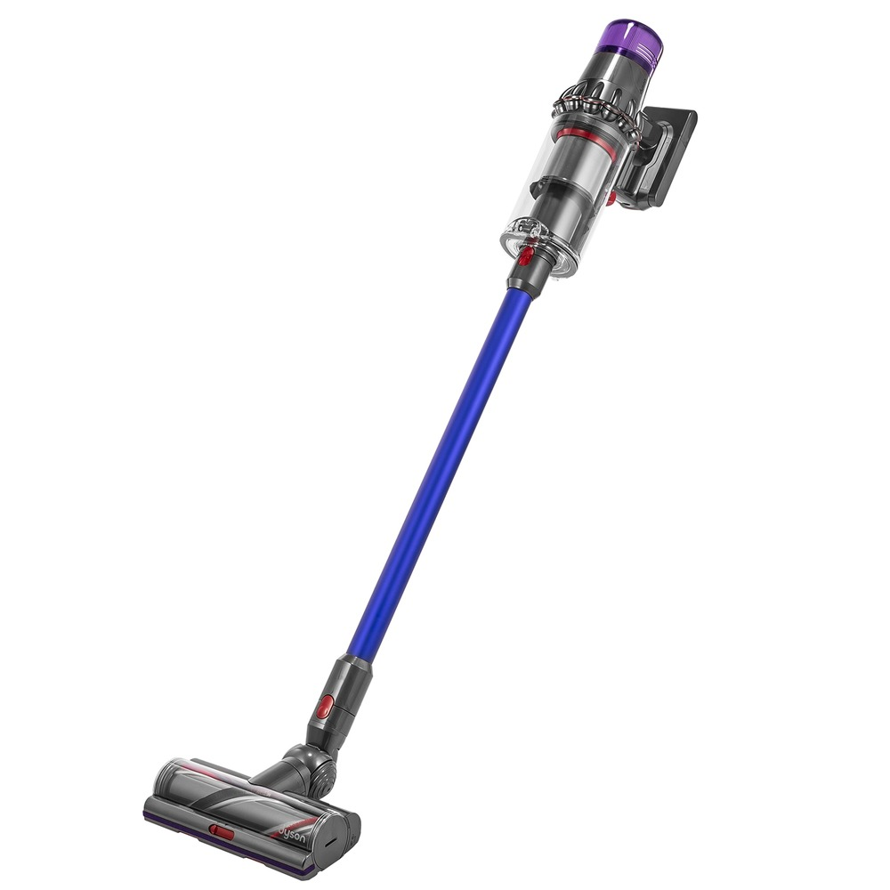

Пылесосы
Вертикальный пылесос Dyson V11 Absolute Extra Pro
Распознает тип покрытия в процессе уборки и автоматически адаптирует мощность. Режим «Авто». Режим «Эко». Режим "Турбо".Отображает данные о работе пылесоса в режиме реального времени. Отображает оставшееся время работы. Уведомления о необходимости обслуживания.
Характеристики товара
- Тип мобильный, вертикальный
- Уборка сухая
- Потребляемая мощность 610 Вт
- Мощность всасывания 220 аВт
- Пылесборник контейнер
Подробное описание товара
Система датчиков динамической нагрузки (DLS™) автоматически корректирует скорость работы двигателя для работы на коврах или твердых полах. Для тщательной уборки различных типов напольных покрытий.
Распознает покрытие. Адаптирует мощность. Тщательно убирает. Оптимальный баланс мощности и времени работы. Пылесос самостоятельно адаптируется для уборки различных типов напольных покрытий.
ЦЕНА 64 990 ₽